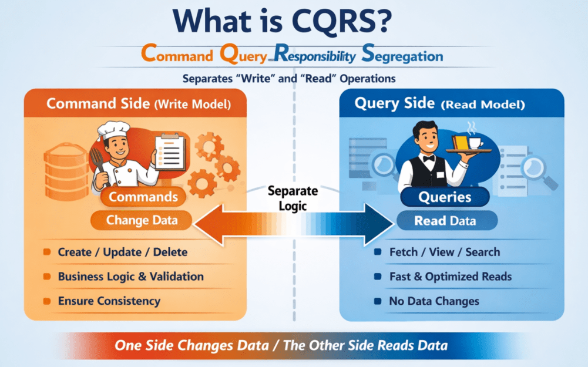
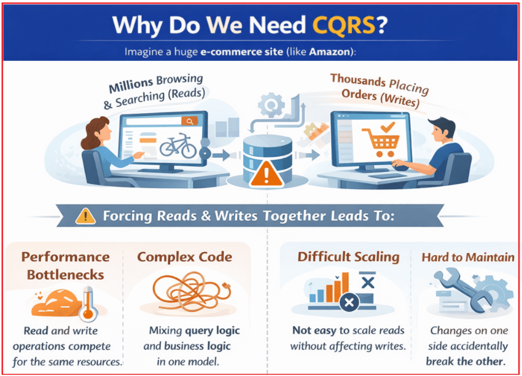
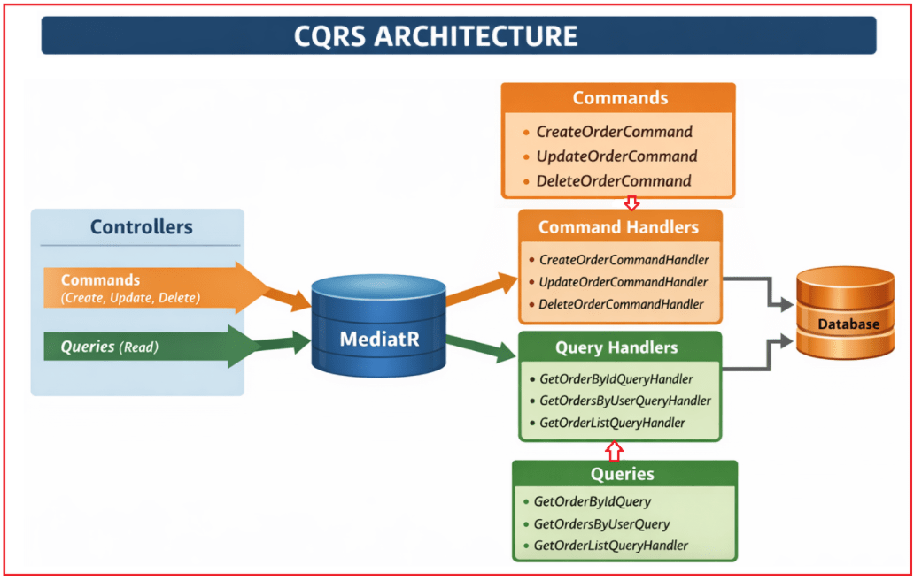
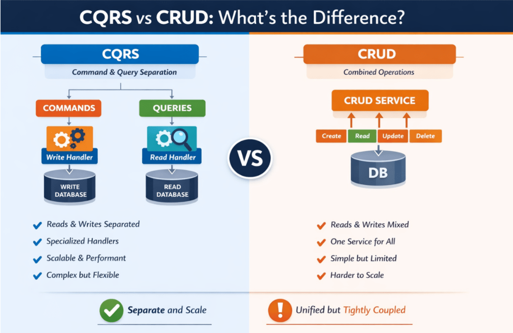
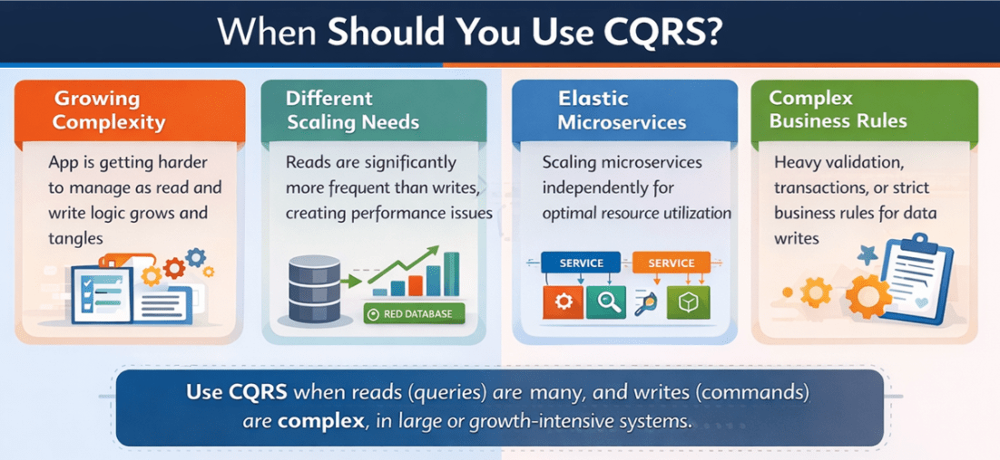

CQRS in ASP.NET Core Web API
CQRS در میکروسرویسهای ASP.NET Core Web API¶
در این پست، در مورد CQRS در ASP.NET Core Web API بحث خواهم کرد. در برنامههای دنیای واقعی، به خصوص در میکروسرویسهای .NET Core، ما مرتباً دو کار انجام میدهیم: دادهها را مینویسیم (ایجاد/بهروزرسانی/حذف) و دادهها را میخوانیم (لیستها، جستجو، داشبوردها، گزارشها). اکثر مبتدیان همه چیز را با استفاده از مدلهای مشابه و سرویسهای مشابه برای خواندن و نوشتن میسازند.
این روش برای پروژههای کوچک خوب جواب میدهد، اما با رشد سیستم، اغلب منجر به کند شدن صفحه نمایش، درهمتنیدگی کد و مشکلات مقیاسبندی میشود، زیرا عملیات خواندن و نوشتن نیازهای بسیار متفاوتی دارند. برای مدیریت این رشد به روشی تمیزتر، معماران از CQRS (تفکیک مسئولیت پرسوجوی فرمان) استفاده میکنند، الگویی که مسئولیتهای نوشتن (دستورات) را از مسئولیتهای خواندن (پرسوجوها) جدا میکند و به هر طرف اجازه میدهد تا برای هدف خاص خود طراحی و بهینهسازی شود.
CQRS در ASP.NET Core چیست؟¶
CQRS مخفف تفکیک مسئولیت پرسوجوی فرمان است. این یک الگوی معماری/طراحی است که میگوید: منطقی که دادهها را تغییر میدهد (دستورات) را از منطقی که دادهها را میخواند (پرسوجوها) جدا کنید. برای درک بهتر، لطفاً به نمودار زیر نگاهی بیندازید:

بیایید آن را به سادهترین شکل ممکن تجزیه و تحلیل کنیم:
فرمان¶
- دستورالعملی که سیستم را تغییر میدهد.
- مثالها: ایجادکاربر، ثبت سفارش، بهروزرسانی پروفایل، حذف محصول
- دستورات دادهها را تغییر میدهند و معمولاً فقط یک نتیجه کوچک، مانند موفقیت/شکست یا یک شناسه، برمیگردانند.
پرس و جو¶
- درخواستی برای دریافت اطلاعات
- مثالها: GetUserDetails، ListOrders، SearchProducts، DashboardReport
- کوئریها فقط دادهها را میخوانند و نباید چیزی را تغییر دهند.
بنابراین، به جای اینکه یک سرویس/متد/مدل همه کارها (خواندن + نوشتن) را انجام دهد، CQRS دو مسیر جداگانه ایجاد میکند:
- سمت فرمان (مدل نوشتن): بر قوانین تجاری، اعتبارسنجی، سازگاری و بهروزرسانیهای صحیح تمرکز دارد.
- سمت پرسوجو (مدل خواندن): بر خواندن سریع، فیلتر کردن، مرتبسازی، جستجو و بازگرداندن دادهها به شکل دقیقی که رابط کاربری نیاز دارد، تمرکز دارد.
قیاس ساده (رستوران)¶
CQRS را مانند یک رستوران در نظر بگیرید:
- پیشخدمت = پرس و جو (خواندن)
- شما از پیشخدمت میپرسید: «میتوانم منو را ببینم؟» یا «کل صورتحساب من چقدر میشود؟»
- پیشخدمت فقط به شما اطلاعات میدهد. هیچ چیز در آشپزخانه تغییر نمیکند.
- سرآشپز = دستور (نوشتن)
- شما میگویید: «یک ماسالا دوسا و یک قهوه درست کنید.»
- سرآشپز با تهیه غذای جدید، وضعیت آشپزخانه را تغییر میدهد.
به همین ترتیب، در یک سیستم مبتنی بر CQRS:
- پرسوجوها → فقط دادهها را بخوانید، بدون تغییر.
- دستورات → اصلاح دادهها (درج، بهروزرسانی، حذف).
به طور خلاصه، CQRS یک الگوی طراحی است که عملیات خواندن (query) و عملیات نوشتن (commands) را به مدلها و منطقهای مجزا تفکیک میکند و به هر طرف اجازه میدهد تا ساده، کارآمد و نگهداری آن آسان باشد. این جداسازی، برنامهها را تمیزتر، سریعتر و مقیاسپذیرتر میکند، به خصوص در سیستمهای بزرگ مبتنی بر میکروسرویس.
چرا در ASP.NET Core به CQRS نیاز داریم؟¶
ما زمانی به CQRS نیاز داریم که یک برنامه آنقدر بزرگ شود که مدیریت همزمان خواندن و نوشتن، سیستم را کند، آن را شلوغ و مقیاسپذیری را دشوار کند. برای درک بهتر، لطفاً به نمودار زیر نگاهی بیندازید:

به یک پلتفرم تجارت الکترونیک بزرگ (مانند سیستمهایی به سبک آمازون) فکر کنید:
- میلیونها کاربر هستند دائماً در حال مرور محصولات، جستجو و مشاهده داشبوردها → اینها خوانده میشوند
- کاربران کمتری سفارش میدهند ، پروفایلهایشان را بهروزرسانی میکنند، نقد مینویسند → اینها نوشتهها هستند
وقتی سرویسها و مدلهای یکسانی هم خواندن و هم نوشتن را مدیریت میکنند، مشکلات شروع به ظاهر شدن میکنند:
- سرویسها بیش از حد بزرگ و گیجکننده میشوند، زیرا هم شامل منطق پرسوجوی سنگین (فیلترها، اتصالها، گزارشها) و هم منطق نوشتن دقیق (اعتبارسنجیها، قوانین کسبوکار، تراکنشها) هستند.
- عملکرد دچار مشکل میشود زیرا درخواستهای خواندن (که بیشترین ترافیک را تشکیل میدهند) با عملیات نوشتن برای منابع یکسان رقابت میکنند.
- مقیاسبندی دشوار میشود زیرا نمیتوانید خواندنها را جدا از نوشتنها مقیاسبندی کنید، اگرچه خواندنها معمولاً به مقیاسبندی بسیار بیشتری نیاز دارند.
- تغییرات خطرناک میشوند زیرا تغییر منطق پرسوجو برای یک صفحه جدید میتواند بهطور تصادفی بر منطق نوشتن تأثیر بگذارد و تغییر قوانین نوشتن میتواند خواندن را مختل یا کند کند.
- نگهداری و آزمایش سختتر میشود زیرا همه چیز در یک مکان با هم مخلوط شده است.
CQRS این مشکل را با تفکیک واضح مسئولیتها حل میکند:
- بخش فرمان (نوشتن) بر صحت، اعتبارسنجی و قوانین کسبوکار تمرکز دارد.
- بخش پرسوجو (خواندن) بر بازیابی سریع و انعطافپذیر دادهها (فیلترها، مرتبسازی، ذخیرهسازی، پیشبینیها) تمرکز دارد.
در یک خط: ما زمانی به CQRS نیاز داریم که برنامه ما بیش از حد پیچیده و بزرگ شود تا بتواند خواندن و نوشتن را با منطق یکسان و به طور ایمن و کارآمد مدیریت کند.
CQRS با ارائه موارد زیر به ما کمک میکند:
- تفکیک واضح دغدغهها
- کد تمیزتر و قابل فهم تر
- عملکرد و مقیاسپذیری بهتر
- تست و نگهداری آسانتر
قیاس ساده¶
مثل این است که یک باجه شلوغ بانک را به دو قسمت تقسیم کنید:
- یک شمارنده برای واریز/برداشت (مینویسد، دقیق و کند)
- پیشخوان دیگری برای استعلام موجودی (خواندن، سریع و مکرر)
این جداسازی، سیستم را تمیزتر، سریعتر، مقیاسپذیرتر و ایمنتر برای تغییر میکند، و دقیقاً به همین دلیل است که به CQRS نیاز داریم.
معماری CQRS:¶
برای درک بهتر معماری CQRS، لطفاً به نمودار زیر مراجعه کنید.

این معماری هفت جزء اصلی دارد:
- کنترلکنندهها
- مدیاتور
- دستورات
- کنترلکنندههای فرمان
- پرسوجوها
- کنترلکنندههای پرسوجو
- پایگاه داده
جزء ۱: کنترلکنندهها - نقطه ورود سیستم¶
کنترلرها نقطه شروع هر درخواستی هستند.
- آنها درخواستهای HTTP را از کلاینتها (مثلاً رابط کاربری، برنامه موبایل، پستچی) دریافت میکنند.
- کنترلرها شامل منطق کسب و کار نیستند.
- تنها مسئولیت آنها این است که:
- ایجاد یک دستور یا پرس و جو
- ارسال آن به MediatR
کنترلکنندهها مستقیماً با هندلرها یا پایگاه داده صحبت نمیکنند.
جزء ۲: MediatR – توزیعکننده مرکزی (لایه میانی)¶
MediatR مانند یک کنترلکننده ترافیک یا اداره پست عمل میکند. کاری که MediatR انجام میدهد:
- یک دستور یا پرس و جو از کنترلر دریافت میکند
- هندلر صحیح را پیدا میکند
- هندلر را اجرا میکند
- نتیجه را به کنترلر برمیگرداند
مهم:
- کنترلکنندهها نمیدانند کدام کنترلکننده منطق را اجرا میکند
- مدیران نمیدانند چه کسی درخواست را ارسال کرده است
این کار اتصال محکم را از بین میبرد و معماری را تمیز نگه میدارد.
بخش ۳: دستورات - چه عملی باید انجام شود؟¶
دستورات، نیت نوشتن را نشان میدهند. از نمودار:
- دستور CreateOrder
- دستور UpdateOrder
- دستور DeleteOrder
ویژگیهای کلیدی:
- دستورات تغییر وضعیت سیستم
- آنها توصیف میکنند که چه کاری باید انجام شود، نه چگونه
- آنها معمولاً برمیگردند:
- موفقیت / شکست
- بولی
- شناسه ایجاد شده یا بهروزرسانی شده
درک مثال: CreateOrderCommand به وضوح به معنای ایجاد یک سفارش جدید است.
بخش ۴: کنترلکنندههای فرمان - جایی که منطق نوشتن (Write Logic) قرار دارد¶
کنترلکنندههای فرمان (Command Handlers) منطق کسبوکار را برای نوشتن اجرا میکنند. از نمودار:
- کنترلکنندهی دستور CreateOrder
- کنترلکنندهی دستور بهروزرسانی
- کنترلکنندهی دستور حذف
مسئولیتهای یک مدیر فرمان:
- اعتبارسنجی ورودی
- اعمال قوانین کسب و کار
- اصلاح موجودیتها
- ذخیره تغییرات در پایگاه داده
- انتشار رویدادها (در صورت نیاز)
قانون مهم: یک دستور → یک کنترلکننده → یک مسئولیت. این کار گردشهای کاری نوشتن را تمیز و قابل آزمایش نگه میدارد.
جزء ۵: پرسوجوها - اطلاعات را در اختیار من قرار دهید¶
پرسوجوها (querys) نشاندهنده درخواستهای خواندن هستند. از نمودار:
- GetOrderByIdQuery
- GetOrdersByUserQuery
- GetOrderListQuery
ویژگیهای کلیدی:
- پرسوجوها دادهها را تغییر نمیدهند
- کوئریها فقط دادهها را میخوانند و برمیگردانند
- آنها DTO هایی را که برای رابط کاربری/صفحه نمایش طراحی شدهاند، برمیگردانند.
درک مثال: GetOrdersByUserQuery به وضوح به معنای واکشی سفارشات برای یک کاربر است
کامپوننت-۶: کنترلکنندههای پرسوجو - منطق خواندن بهینهشده¶
کنترلکنندههای پرسوجو (Query Handlers) عملیات فقط خواندنی را مدیریت میکنند. از نمودار:
- GetOrderByIdQueryHandler
- GetOrdersByUserQueryHandler
- GetOrderListQueryHandler
مسئولیتها:
- اجرای کوئریهای خواندن سریع
- اعمال فیلتر، صفحهبندی و مرتبسازی
- نگاشت دادهها به DTOهای پاسخ
- هرگز پایگاه داده را بهروزرسانی نکنید
قانون: کنترلکنندههای پرسوجو هرگز نباید وضعیت را تغییر دهند
جزء ۷: پایگاه داده - یک پایگاه داده، دو مسیر¶
توضیح مهم از نمودار:
- فقط یک پایگاه داده وجود دارد
- هر دو دستور و کوئری از یک پایگاه داده استفاده میکنند
- CQRS در اینجا در مورد جداسازی منطق است، نه پایگاههای داده
بعداً (اختیاری):
- همین معماری میتواند از موارد زیر پشتیبانی کند:
- ذخیره سازی
- کپیها را بخوانید
- پایگاه داده خواندن جداگانه
- اما اجباری نیست.
CQRS در مقابل CRUD: تفاوت چیست؟¶
هر دو CRUD و CQRS با خواندن و تغییر دادهها سروکار دارند، اما سیستم را به روشهای بسیار متفاوتی سازماندهی میکنند.

عملیات CRUD (ایجاد، خواندن، بهروزرسانی، حذف)¶
در رویکرد سنتی CRUD:
- شما معمولاً از یک مدل (موجودیت) برای خواندن و نوشتن استفاده میکنید
- شما معمولاً یک کنترلر/سرویس دارید که شامل متدهایی مانند: Get، GetById، Post، Put، Delete است.
- منطق خواندن و نوشتن به شدت به هم وابسته است (در یک لایه و اغلب با جریان کد یکسان ترکیب میشوند)
مناسب برای: برنامههای کوچک تا متوسط، یادگیری و قوانین ساده کسب و کار.
CQRS (تفکیک مسئولیت پرسوجوهای فرمان)¶
در رویکرد CQRS:
- دستورات، مدیریت میکنند نوشتنها را (ایجاد/بهروزرسانی/حذف)
- کوئریها مدیریت میکنند خواندنها را (دریافت/جستجو/لیست/گزارش)
- شما اغلب از مدلهای جداگانه استفاده میکنید:
- مدل نوشتن بر قوانین کسب و کار، اعتبارسنجی و صحت تمرکز دارد.
- مدل خواندن بر سرعت، فیلتر کردن و دادههای سازگار با رابط کاربری تمرکز دارد.
- شما معمولاً از Command Handlers و Query Handlers (مسئولیتهای جداگانه) استفاده میکنید.
- گاهی اوقات (نه همیشه)، خواندن و نوشتن حتی میتوانند از پایگاههای داده مختلف برای مقیاسبندی مستقل استفاده کنند.
بهترین برای: سیستمهای بزرگ یا پیچیده، برنامههای کاربردی با حجم خواندن بالا، میکروسرویسها و نیازهای مقیاسپذیری بالا.
سادهترین راه برای به خاطر سپردن¶
- CRUD: یک مسیر برای همه چیز (مدل یکسان + خط لوله یکسان برای خواندن و نوشتن)
- CQRS: دو لاین مجزا
- یک خط برای کامیونهای سنگین (همراه با اعتبارسنجیها و قوانین نوشته شده است)
- یک لاین برای ماشینهای سریع (برای سرعت و نیازهای رابط کاربری بهینه شده است)
این تفاوت اصلی است که دانشآموزان باید به خاطر داشته باشند.
چه زمانی باید از CQRS در میکروسرویسهای ASP.NET Core استفاده کنید؟¶
شما باید زمانی از CQRS استفاده کنید که برنامه شما به اندازهای بزرگ شود که مدیریت خواندن و نوشتن با همان مدل و منطق، باعث ایجاد مشکلات عملکرد، مقیاسبندی یا نگهداری شود. CQRS قدرتمند است، اما ساختار و قطعات متحرک اضافه میکند، بنابراین فقط زمانی باید استفاده شود که مزایای واضحی داشته باشد.

سناریوهای خوبی که CQRS در آنها منطقی به نظر میرسد¶
نسبت بالای خواندن به نوشتن (سیستمهای با حجم بالای خواندن)¶
- وقتی بیشتر درخواستها خواندنی هستند (مرور، جستجو، داشبورد، گزارشها) و تنها بخش کوچکی از آنها نوشتنی است.
- مثال: مرور کاتالوگ محصولات، جستجوی هتل/پرواز، داشبوردهای مدیریتی، صفحات تحلیلی/گزارشدهی.
قوانین پیچیده کسب و کار در سمت نوشتن¶
- وقتی عملیات نوشتن ساده نباشد، «ذخیره دادهها» نیست، بلکه شامل گردش کار و قوانین سختگیرانه است.
- مثال: ثبت سفارش، تأیید وام، شروع بازپرداخت، لغو رزرو، رزرو موجودی - که در آن اعتبارسنجی و ثبات اهمیت زیادی دارد.
رابط کاربری به شکل داده متفاوتی نسبت به مدل دامنه نیاز دارد¶
- مدل نوشتن برای صحت و روابط طراحی شده است، اما رابط کاربری اغلب دادههای مسطح، ترکیبی یا تجمیعی را میخواهد.
- مثال: «جزئیات سفارش به همراه نام مشتری، مبلغ کل، تاریخ آخرین پرداخت» در یک پاسخ سریع. CQRS امکان یک مدل خواندن جداگانه را فراهم میکند که برای چنین صفحات نمایشی بهینه شده است.
شما باید خواندن و نوشتن را به طور متفاوتی مقیاسبندی کنید¶
- اگر خواندنها نیاز به ذخیرهسازی موقت (caching)، کپیهای خواندن یا حتی یک پایگاه داده جداگانه برای خواندن داشته باشند، در حالی که نوشتنها باید دقیق و تراکنشی باقی بمانند. CQRS این جداسازی را آسانتر و ایمنتر میکند.
چه زمانی CQRS معمولاً بیش از حد مورد استفاده قرار میگیرد (از آن اجتناب کنید)¶
- برنامههای کوچک و ساده CRUD (پنلهای مدیریت پایه، نمونههای اولیه، MVPها)
- پرسشهای ساده و قوانین تجاری ساده
- تیمهای بسیار کوچک یا توسعه در مراحل اولیه، جایی که سادگی و سرعت بیش از معماری پیشرفته اهمیت دارند
- وقتی نمیتوانید ثبات نهایی را تحمل کنید (در مواردی که هر خواندن باید فوراً هر نوشتن را منعکس کند)
قاعده کلی (بهترین توصیه عملی): با CRUD برای سادگی شروع کنید. فقط زمانی به CQRS سیستم بروید که بار خواندن، پیچیدگی نوشتن یا نیازهای مقیاسبندی، ساختار اضافی را به وضوح توجیه کند.
درک CQRS در مقابل CRUD: سوالاتی که هر دانشآموزی میپرسد¶
دانشجو:¶
آقا، من همین الان هم از چندین DTO مثل CreateOrderDTO، UpdateOrderDTO و OrderResponseDTO استفاده میکنم. پس چرا مردم میگویند CRUD بد است و CQRS بهتر است؟
مربی:¶
اول از همه، این را به وضوح به خاطر داشته باشید: CRUD بد نیست. CRUD برای بسیاری از پروژهها کاملاً مناسب است. همچنین، استفاده از DTO های مختلف یک روش خوب است - شما کار درستی انجام میدهید. اما DTOها و CQRSها مشکلات متفاوتی را حل میکنند.
دانشجو:¶
مشکلات مختلف؟ چگونه؟
مربی:¶
- DTOها شکل دادهها را از هم جدا میکنند.
- CQRS عملیات (اکشنها) را از هم جدا میکند.
بنابراین: DTOها = «چه دادهای؟» و CQRS = «چه عملی؟»
دانشجو:¶
من هنوز گیج هستم. میشه یه مثال ساده بزنید؟
مربی:¶
بله. به یک سرویس CRUD معمولی نگاه کنید:
- ایجادسفارش(ایجادسفارشDTO)
- UpdateOrder(مرجع UpdateOrderDTO)
- GetOrderById(شناسه)
حالا مشکل: UpdateOrder() واقعاً به چه معناست؟
آیا این است:
- تغییر آدرس؟
- تایید پرداخت؟
- سفارش را لغو کردن؟
- تغییر وضعیت؟
حتی اگر از DTO متفاوتی استفاده کنید، هدف از عمل نامشخص باقی میماند.
دانشجو:¶
اوه! بنابراین، یک DTO میگوید چه دادههایی را نشان میدهد، اما دقیقاً نمیگوید چه عملی را انجام میدهم.
مربی:¶
دقیقاً.
دانشجو:¶
پس CQRS چگونه این مشکل را حل میکند؟
مربی:¶
CQRS با استفاده از نامهای واضح، عمل را صریح میکند:
- دستور تایید سفارش
- دستور لغو سفارش
- دستور تغییر وضعیت سفارش
- GetOrderByIdQuery
فقط با خواندن نام، همه میدانند:
- چه عملی در حال وقوع است
- باشد چه نوشتن (دستور) و چه خواندن (پرس و جو)
حدس زدنی در کار نیست.
دانشجو:¶
بنابراین CQRS عمدتاً در مورد وضوح است؟
مربی:¶
بله، وضوح و کنترل. CQRS به این سوال به روشنی پاسخ میدهد: کاربر دقیقاً چه کاری میخواهد انجام دهد؟ این موضوع در سیستمهای واقعی که اقدامات تجاری پیچیده میشوند، بسیار مهم است.
دانشجو:¶
اما CQRS کلاسهای زیادی ایجاد میکند. آیا این زیادهروی نیست؟
مربی:¶
این میتواند برای پروژههای کوچک زیادهروی باشد. اما در پروژههای واقعی، یک سرویس بزرگ به دلایل زیر دشوار میشود:
- عظیم میشود.
- اشکالزدایی سختتر میشود
- آزمایش سختتر میشود
- قوانین کسبوکار با منطق پرسوجو مخلوط میشوند
CQRS فایلهای بیشتری ایجاد میکند، اما هر فایل کوچک، متمرکز و قابل توضیح میشود.
دانشجو:¶
آیا CQRS عملکرد را بهبود میبخشد؟
مربی:¶
نه به طور خودکار. CQRS جادو نیست. اگر از همان پایگاه داده و کوئریها استفاده کنید، ممکن است هیچ پیشرفتی در سرعت مشاهده نکنید. عملکرد فقط زمانی بهبود مییابد که از CQRS همراه با مواردی مانند موارد زیر استفاده کنید:
- بهینهسازی پرسوجو (تصویرسازی، تعداد اتصالات کمتر)
- ذخیره سازی برای کوئری های خوانده شده
- خواندن کپیها / خواندن جداگانه پایگاه داده
- مدلهای مختلف خواندن (برای داشبوردها و لیستها)
بنابراین CQRS ارائه میدهد ابتدا ساختار را و سپس گزینههای مقیاسبندی را ارائه میدهد.
دانشجو:¶
پس چرا شرکتها در پروژههای واقعی از CQRS استفاده میکنند؟
مربی:¶
چون پروژههای واقعی رشد میکنند. اقدامات پیچیده میشوند:
- ایجاد سفارش
- سفارش را تأیید کنید
- لغو سفارش
- سفارش بازپرداخت
- تغییر وضعیت با قوانین
- حفظ تاریخچه وضعیت
CQRS این اقدامات را تمیز و ایزوله نگه میدارد، بنابراین کد حتی پس از ۱ تا ۲ سال قابل مدیریت باقی میماند.
دانشجو:¶
بنابراین، آیا همیشه باید از CQRS استفاده کنم؟
مربی:¶
خیر. از CQRS همه جا استفاده نکنید. فقط زمانی از CQRS استفاده کنید که ماژول موارد زیر را داشته باشد:
- گردشهای کاری پیچیده و قوانین تجاری
- صفحات خواندن متنوع و فراوان (فیلترها، لیستها، جدولهای زمانی، داشبوردها)
- تغییرات مکرر در الزامات
دانشجو:¶
چه زمانی CRUD + DTO کافی است؟
مربی:¶
CRUD + DTO زمانی عالی است که:
- ماژول ساده است (جداول اصلی پایه)
- قوانین کسب و کار حداقلی هستند
- تعداد کم صفحه نمایش و تعداد کم تغییرات API
- تیم کوچک/مرحله یادگیری
اکثر پروژههای دانشجویی در همه جا به CQRS نیاز ندارند.
دانشجو:¶
میشه تفاوت مصاحبهها رو تو یه خط خلاصه کنید؟
مربی:¶
بله: DTOها دادهها را جدا میکنند. CQRS اقدامات (نوشتن در مقابل خواندن) را جدا میکند.
دانشجو:¶
بنابراین، استفاده از DTOها به این معنی نیست که من از CQRS استفاده میکنم؟
مربی:¶
درست است. میتوانید داشته باشید:
- CRUD + DTO ها (رایج و خوب)
- CQRS + DTOها (برای ماژولهای پیچیده رایج است)
DTOها و CQRS مستقل هستند.
خلاصه:¶
CQRS (تفکیک مسئولیت پرسوجوی فرمان) جادو نیست؛ بلکه یک ایده ساده اما قدرتمند است: نحوه نوشتن دادهها (دستورات) را از نحوه خواندن دادهها (پرسوجوها) جدا کنید. این جداسازی، سمت نوشتن را تمیز و مبتنی بر قانون (اعتبارسنجیها، منطق کسبوکار، سازگاری) نگه میدارد، در حالی که به سمت خواندن اجازه میدهد سریع و انعطافپذیر باشد (جستجو، فیلتر کردن، داشبورد، دادههای سازگار با رابط کاربری).
CQRS برای هر برنامه CRUD کوچکی مورد نیاز نیست، اما وقتی یک سیستم رشد میکند، به خصوص در میکروسرویسها با ترافیک خواندن سنگین و گردشهای کاری پیچیده، CQRS روشی واضحتر، مقیاسپذیرتر و قابل نگهداریتر برای مدیریت آن رشد ارائه میدهد.